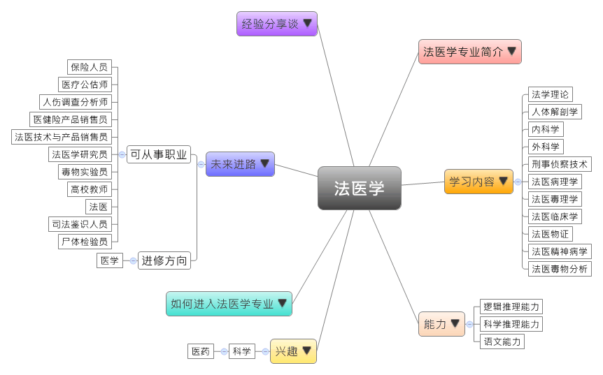
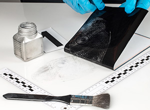

- 专业大观园
-

- 专业介绍
-
什么是法医学专业？
法医学是现代司法与侦查工作中关键的科学工具，可说是串连着“法学”与“医学”的桥梁学科。法医的工作包括勘验受害者的基本特征与死因（自杀、他杀、意外、自然死亡）、分析各种致死的毒物或凶器，以及推论案发时间与环境，以协助检警办案。在职场上，毕业生适合在公安部门、社会鉴定机构或保险公司等从事法医鉴定、命案现场勘查、法医物证检验的工作；在生活中，法医学应用无处不在，例如保险案件中的死亡鉴定，透过法医学专业的鉴定，估算死亡的原因和时间，确定保险金的核保与理赔。
法医学专业除了让学生熟悉毒理学、毒物分析等分析化学的理论和操作方法，亦结合现代化的科学仪器与分析技术，来了解各种毒物的毒性、中毒机理、代谢功能变化等细节，成为能在各级公安机关、政法机关从事法医学检验与鉴定工作的高级科学技术人才。

毒物学实验室－检验技术演练  刑事侦察技术－采证技术演练
- 学习内容
-
法医学专业学生主要学习基础医学、临床医学，以及法医学等相关的理论与知识，法医学专业相当注重应用能力，所以学生须接受人体解剖、案例分析、刑事侦察技术、物证分析、毒物分析、各种鉴定的专业训练。
本专业学习方向通常分为三类：基础医学类、临床医学类和法医学类。法医学专业主干课程有：法学理论、人体解剖学、病理学、内科学、外科学、刑事侦察技术、司法鉴定学、法医病理学、法医毒理学、法医临床学、法医物证、法医精神病学、法医毒物分析……等。此外，学生须加选一门以上的实践教学课程，如：临床实习、法医病理、法医物证和法医临床等课程进行选修。
本专业可以习得的知识与获得之能力、技能列点：第一，掌握法医学相关的理论与操作技术，并具备能进行案例分析、检案、鉴定的能力；第二，具备运用科技仪器与计算器操作技术的能力，以进行初步的科学研究和实际工作；第三，了解全球法医学专业的最新发展动态，以及我国法医学相关的政策与发展走向。
- 能力
-
法医学专业学生，需具备以下能力：
相关性向能力 说明 逻辑推理能力  具备案件批判与独立思考的能力
具备案件批判与独立思考的能力
具备分析命案现场并进行鉴定的能力
能够对案件起因与过程细节提出假设并进行验证科学推理能力 具备案例分析与鉴定能力
能推测并引导法医学研究的发展动向
具有从事法医病理与法医物证检案的能力语文能力 能条理分明地表达物证与分析的结果
具备以通俗语言让咨询者了解调查与分析结果的能力
- 兴趣
-
若你对下列活动或事物有高度兴趣，可考虑进入法医学专业学习：
科学 医药 对事物充满好奇并追根究底
运用科学方法找出问题的解答
喜欢能应用于生活中的科学事物
- 如何进入此专业
-
下面列举开设法医学专业的211工程重点大学院校：
- 未来进路
-
可从事职业
由于国家法制化与司法科学突破性的发展，加上国家对于司法鉴定技术日益重视，为法医学提供了广阔的发展空间。学生毕业后通常适合于各级公安部门、检察院、司法机关从事鉴定、解剖、命案现场勘查、物证检验等工作；同时也可在保险公司从事案件分析与检案鉴定等工作；又或是在各医院从事尸体检验、活体检验等工作；最后则是在各高等院校或科研部门从事学术与教学的工作。在工作职场上皆能发挥案例分析、司法鉴定等专长：
行业 职业 商务服务业 保险人员、人伤查勘岗、医疗公估师、人伤调查分析师、医健险产品销售员、法医技术与产品销售员 教育 高校教师 科学研究 法医学研究员、毒物实验员 国家机构（公安部门、检察院、司法机关、鉴定机构） 法医、法医助理、司法鉴识人员、物证司法鉴定人、毒物司法鉴定人、尸体检验员、活体检验员、法医技术支持专员 进修方向以下列举法医学专业毕业生可以继续修读之学科门类、一级学科与硕士点：
学科门类 一级学科 硕士点 医学 基础医学法医学、病理学与病理生理学、人体解剖与组织胚胎学 药学药物分析学、药理学、药物化学、药物代谢动力学、药学信息学 特种医学生物物证学、法医病理学与法医临床学、法医毒理学、空间时间生物学、医学心理学
- 经验分享谈
-
坚持用物证说话——李昌钰荣誉教授
1964年，李昌钰博士和妻子到了美国，他当时在纽约大学做研究员，为了生活，他还要去餐馆端盘子，周末还要教外国人中国功夫，在这样的状况下，他先后取得了硕士、博士学位，成为大学教授。1998年，他荣升美国康涅狄格州警政厅厅长，成为全美第一位出任州级警界最高长官的华人。
为了和师生们深入交流鉴识科学，李昌钰博士选取了1993年他经手调查的时任美国总统克林顿的白宫特别助理自杀案。1993年7月20日，文森·福斯特的尸体在公园被人发现，这位时任美国总统克林顿的白宫特别助理中枪身亡。当时的美国舆论认为克林顿是凶手，美国国会便要求李昌钰博士前往协助调查。作为该案的重要物证，死者的眼镜被人在另外一个地方发现。有人认为，如果是自杀，眼镜怎么不在案发现场呢？当时，鉴识科学发挥了作用。李昌钰博士通过模拟实验，让物证说话，证明眼镜是在福斯特自杀过程中掉在别处的。而且李昌钰博士发现，尽管眼镜被清洗了，但上面仍残留了细小的粉末，其中有死者的血液、肌肉、毛发等微证物。至此，案情真相大白，福斯特确系自杀。李昌钰博士笑着说“后来有很多人都在怪我，说我改变了美国历史。如果证明是他杀的话，克林顿就要下台，戈尔升任总统，那后来就不会有莱温斯基案了，布什也不会当总统了。”
“我一辈子只做了一件事，那就是把不可能变成可能。”李昌钰博士说，“中国人与外国人竞争，最大的优势就是努力。我用1年时间，做别人3年的事，这些事，就是办案。”他说。【资料来源：洛阳网新闻 神探李昌钰被授河科大荣誉教授、河科大法医学院名誉院长.】